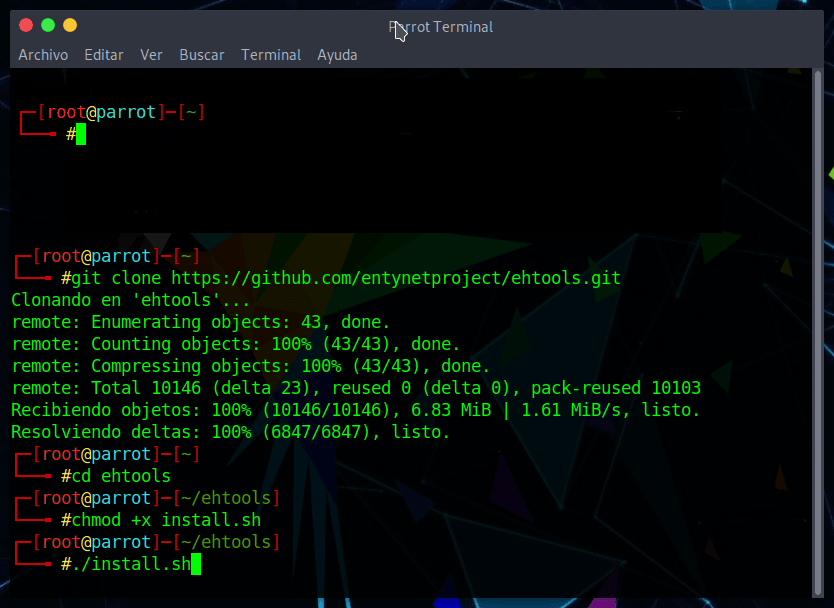
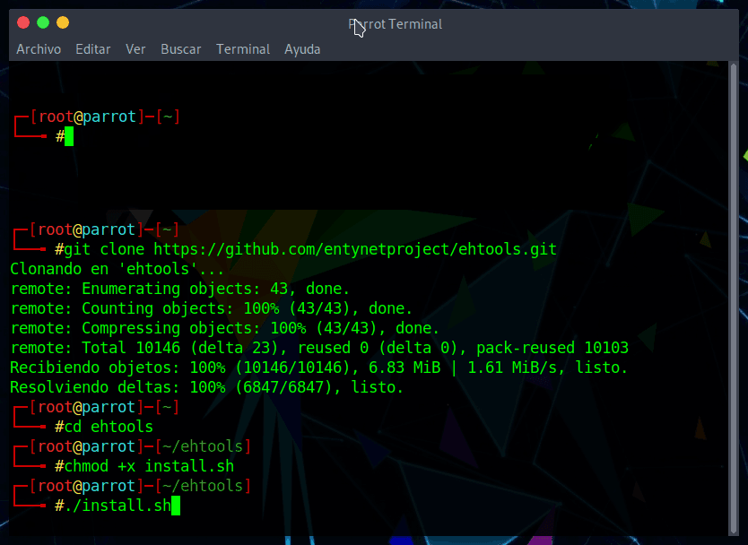

Ehtools Framework (Entynet Hacker Tools) es un conjunto de herramientas de penetracion para redes WiFi desarrollado por entynetproject. Se puede usar para todo, desde instalar nuevos complementos hasta hacer contacto WPA en segundos. Ademas, es facil de instalar, configurar y usar.
Como todas las tecnologias, el WiFi tambien tiene algunos problemas de seguridad, especialmente para las redes publicas WiFi. Cualquier intruso puede atacar nuestros dispositivos accediendo a nuestras redes WiFi (puedes hacer una prueba con Wifiphisher).
Entonces, debemos analizar nuestra red inalambrica de vez en cuando para evitar ataques de hackers. Existen muchas herramientas para hacer pruebas de penetracion de WiFi, pero la herramienta que discutiremos aqui es un poco diferente a las demas.
Sobre Ehtools
¿Que es lo que hace que el marco de trabajo de Ehtools sea diferente de otros?
Cuando hacemos pruebas de penetracion WiFi, tendemos a usar diferentes herramientas para diferentes tareas. Eso se vuelve muy irritante a veces.
Ehtools solo organiza y enlaza las herramientas utilizadas para las pruebas de penetracion WiFi que ya existen para que podamos controlarlas desde un unico lugar. Ejemplos de estas herramientas son Aircrack-ng, Airdump-ng, WPS Pixie- Dust, etc.
Veamos como podemos configurar Ehtools en la plataforma Linux.
Nota!
Debes estar conectado como 'root' para poder ejecutar la herramienta sin errores.
Instalar EhTools en Linux
Primero descarga Ehtools desde Github. Luego, navega al directorio donde lo has descargado y expandelo. Aqui veras un script de shell llamado ‘install.sh‘. Necesitas lanzarlo para instalar la herramienta. Antes de lanzarlo debes darle permiso de root. Solo tienes que escribir los comandos uno por uno como puedes ver a continuacion:
git clone https://github.com/entynetproject/ehtools.git
cd ehtools
chmod +x install.sh
./install.sh

Ahora te pedira la version de Ehtools que quieres instalar. Ofrece dos versiones: pro y lite. Puedes comprar la version pro de las herramientas desde aqui, pero si no quieres, puedes seguir instalando la version lite.
- Como la mayoria preferira ir con la lite para probar, tambien elegimos la lite.
- Ahora presiona la tecla Intro. En el siguiente paso, te pedira que instale los modulos. Escribe “yes” y pulsa la tecla Intro.

Ahora tienes que establecer un nombre de usuario y una contrasena para proteger a ehtools de accesos no autorizados. Escribe “yes” y pulsa Intro.

El ultimo paso es crear una clave de configuracion. Escribe la clave que deseas configurar y pulse Intro (aprovechare este dia capicua – 02022020).

¡Aqui vamos! Has configurado con exito la herramienta.
- Para ejecutar Ehtools Framework debes ejecutar el siguiente comando.
ehtools

Ejemplos de uso
Para comenzar, podemos acceder a los datos sobre la red a la que estamos conectados actualmente, asi como a cualquier interfaz de red, desde el menu principal. Aqui, podemos encontrar informacion local escribiendo l para extraer la informacion de IP local, como se ve a continuacion.

Esto nos permite hacer cosas como escanear la red en busca de otros dispositivos. Esta parte de Ehtools Framework nos brinda una mejor visibilidad en una red y una conciencia situacional de los dispositivos que nos rodean. La diversa informacion se puede desglosar de la siguiente manera:
- Ejecuta ifconfig y proporciona los nombres y la informacion sobre todos los dispositivos de red.
(ehtools)> if

Para habilitar wlan0:
(ehtools)> 1
Para habilitar wlan0mon:
(ehtools)> 2
Iniciar una exploracion ARP en la red para descubrir dispositivos cercanos:
(ehtools)> scan
Iniciar el modo de monitor en el adaptador de red inalambrico:
(ehtools)> start
Detener el modo de monitor inalambrico en el adaptador de red:
(ehtools)> stop

Usar el acceso rapido de Ehtools:
ehtools -o
ehtools -u
ehtools -h
ehtools -w

Resumen
Muchos desarrolladores que trabajan en este tipo de herramienta no crean nuevas herramientas, sino que vinculan las herramientas que ya existen y se utilizan para la misma categoria de pruebas de penetracion. Nos ayuda a controlar diferentes herramientas desde un lugar con una sola linea de comandos.